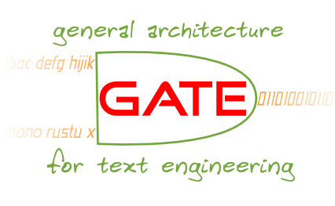

Annotation Factory Services for eCulture
Hamish Cunningham, University of Sheffield
-———————————————————————
Current successes for semantic annotation
Why is it spreading so slowly?
From annotation tools to annotation factories
[Afterword: GATE and the current state-of-the-art]
Thanks:
Success (1): Perseus
are annotated. This allows
Perseus to do some of the things illustrated in these screen shots: at the
top there is a map of references to places in the literature, which can also
be graphed over time; below there is a new search tool that allows you to
specify particular people, or locations, etc.
)

-———————————————————————

Success (2): Flikr, Delicio.us
-
Delicio.us
-
shared bookmarks hosting service
-
exploiting redundancy in the web to generalise (cf. Google)
-

-
Flikr:
-
photo tagging and publishing service
-
"solves" the image analysis problem
-
Folksonomy: annotation as behaviour mining or DIY indexing
Success (3): Innovantage, Garlik
-
Innovantage: mining the web for employment vacancies
-
search for vacancies from 150,000+ companies across all UK industry
sectors
-
search for jobs by SIC code, location, job title, essential skills,
salary, reference, contact etc.
-
uses ontology-based information extraction and conceptual search based on
GATE and KIM from OntoText, (evaluated leading semantic annotation tool at
eponymous ISWC 2005 workshop)
-
Garlik: who's saying what about me?
-
Egg founder and CIO: Mike Harris, Tom Ilube
-
give individuals more power over their personal information
Why isn't semantic annotation more widespread? (1)
Most cases aren't as bounded as Perseus.
-
PrestoSpace estimates AV archives at
|
Carrier type | # items
|
| -
Film in Broadcast Archives | 4.238.857
|
| -
Film in Film Archives | 1.665.708
|
| -
Video tapes | 6.232.352
|
| -
Audio recordings | 5.321.301
|
| -
Total audiovisual items | 17.458.218
|
-
Guesstimating 20-minute per item =~ 6 million hours.
-
BBC Newsnight archiving time is eight hours per hour
-
=~ 18 million person years to process!
Why isn't semantic annotation more widespread? (2)
There aren't enough DIY cases
-
Flikr and Delicio.us have tapped into obvious and widespread needs
-
Innovantage and Garlik hope to do the same
-
But: in many cases we don't have the necessary folk for a folksonomy
-
Broadcast archives, for example, are Catch-22:
-
don't know you need it until you use it,
-
can't use it until widespread need generates funding...
Why isn't semantic annotation more widespread? (3)
Square Fish Syndrome
-
Imagine you're looking at a river under which a fish swims by
-
You can show the ripples and eddies
-
to an artist and ask them to draw a fish
-
to a statistician and ask them to model a fish
-
In both case you're liable to get a square fish
-
Human language processing can be done by
-
linguists intuiting about grammar
-
machine learning creating statistical models
-
Language is a surface phenomenon
-
This leads to...
Specificity vs. Complexity Trade-off

-
Simple tasks: document clustering, full-text search, entities, simple
descriptions
-
Complex tasks: relations and events, cross-document reference
-
Specific domains: chemical engineering job descriptions, football match
reports
-
General domains: all news sites, a corporate intranet, the web
The key problem: balancing complexity vs. specificity to achieve useable
accuracy.
Annotation: the Missing Manual
-
We have: lots of algorithms, data structures and evaluation protocols
-
We lack: clear statement of how to specify and implement new tasks
Needed, a methodology covering:
-
how to decide if annotation is applicable to your problem
-
how to define the problem with reference to a corpus of examples
-
how to identify similarities with other problems and thence to estimate
likely performance levels
-
how to design a balance of adaptation interventions for system setup and
maintenance
-
how to measure success
(I.e.:
not "get this great new bit of software and it will transform your life",
but "this is how to implement robust and maintainable services".)
A Division of Labour (Multi-role Methodology)
We have tools for Language Engineers; we lack tools for:
(Human) Annotators
-
training data volumes large: labour has to be cheap!
-
bootstrap annotation process with mixed-initiative learning
-
voting mechanism for multiple simultaneous annotators
Information Curators
-
larger skill set but small enough to be in-house
-
librarians, data curation or sys admin
-
training course of a week or two
-
toolset including things e.g. ANNIC, JAPE
-
managing annotators, liaising with engineers
Unifying Adaptation Interventions
-
Problem: annotation systems are dynamic objects because the information
need and the data don't remain static
-
Therefore we need mechanisms for adaptation
-
Three current disparate research streams:
-
assisted authoring of finite state transduction rules, including:
generation of rules from annotation pattern searches across corpora
graphical debugging of transduction rule execution
-
supervised mixed-initiative learning of extraction models
-
unsupervised clustering of terms for purposes such as populating
domain-specfic gazetteers or taxonomies
-
Should be complementary, not competitive
Assistive vs. Autonomous
-
A modern factory engaged in the production of high-tech goods combines a
large degree of automation with skilled labour of various types and
quantities.
-
Robots often play a significant role, although they are never altogether
unaccompanied:
-
at the very least service engineers must attend their operation
-
in most cases there will also be staff who take care of reconfiguring
robotic equipment for new product lines or refinements to the existing
processes and products
-
Factory approach: automatic where possible, assistive where necessary
-
technology can make labour cheap enough
-
net helps access, cf. Amazon's Mechanical Turk
Iterative Processes vs. Waterfall or "Big Bang"
How to construct a failing software project:
-
work for the government (optional)
-
define your plan as:
-
first we (highly-paid developers) decide what to build (requirements)
-
then we (middle-level developers) decide how to build it (design)
-
then we (lower-level developers) implement it (coding)
-
then we (support staff) deploy it (disaster)
A better model: iteration, XP, do something useful now and get it out there
The same with annotation: we need iterative methods that account for
changing needs and gradual refinement of requirements.
Service-Orientated vs. Monolithic
-
Software has evolved: modules, objects, components, now services
-
Gartner reports that
-
"By 2008, SOA will be a prevailing software engineering practice,
ending the 40-year domination of monolithic software architecture"
-
"Through 2008, SOA and web services will be implemented together in
more than 75 percent of new SOA or web services projects."
-
EAI less costly / more reliable via explicit modelling of meaning of
data and processes
-
B2B and B2C eCommerce systems will become:
-
more reusable: interfaces meaningful for machines, not just people;
-
more dynamic and adaptive, virtual apps composed from discovered
components;
-
more scaleable, distributed across multiple machines;
-
saleable as discreet elements in application service providers market
Summary: from Annotation Tools to Annotation Factories
We have lots and lots of tools and algorithms for annotation; what we
need is
-
methodological instead of purely technological
-
multi-role instead of single role
-
inclusive of previously disjoint adaptation interventions
-
assistive instead of autonomous
-
diachronic, life-cycle orientated, not waterfall or "big bang" orientated
-
service-orientated, not monolithic
GLEAM: GATE Layer for Extraction, Annotation and Mining
Join us? hamish@dcs.shef.ac.uk or
Google "hamish"
Truth is stranger than fiction

(A real square fish.)
Afterword: GATE and the current state-of-the-art
GATE is:
-
like Eclipse for Natural Language Engineering, like Lucene for Information
Extraction, a leading toolkit for Text Mining
-
used worldwide by thousands of scientists, companies, teachers and
students
-
used for all sorts of language processing tasks, including Information
Extraction in many languages
-
funded by the EPSRC, BBSRC, AHRC, the EU and commercial users
GATE is...
-
comprised of an architecture, a free open source framework (or SDK) and
graphical development environment, lots and lots of components
-
100% Java reference implementation of ISO TC37/SC4 and used with XCES in
the ANC
-
10 years old in 2005, used in many research projects and under integration
with IBM's UIMA
-
based on MVC, mobile code, continuous integration, and test-driven
development, with code hosted on SourceForge
GATE helps...
-
...scientists with:
-
repeatability
-
quantitative evaluation
-
collaboration
-
apparatus longevity
-
...students and teachers with:
-
working examples
-
bootstrapping projects
-
evaluation baselines
-
...application developers with:
-
comprehensive standalone class library
-
visual debugging tools
GATE Projects and Users
Some projects:
-
SEKT (EC); TAO (EC); NEON (EC); MC (EC); AKT; PrestoSpace; KWeb; MMKM;
ETCSL; MultiFlora; more.
A sample of users:
-
IBM; BBC; British Telecom; Imperial College; Hewlett Packard; OntoText;
Perseus; Greenstone; NCSA.
More information: